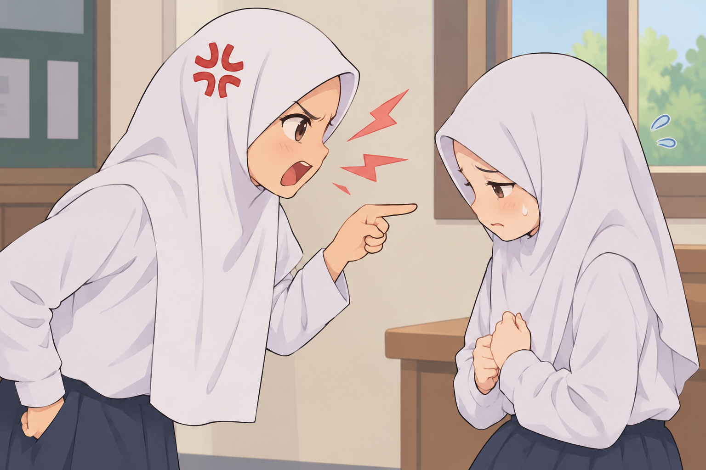
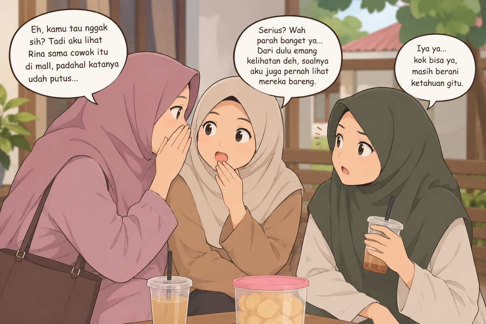

masuk neraka karena lisan




𓂃 ࣪˖ Jaga Lisan, Jaga Akhlak ˖ ࣪𓂃
Gambar-gambar tersebut menceritakan tentang pentingnya menjaga lisan dalam kehidupan sehari-hari, mulai dari menghormati orang tua, tidak marah-marah kepada teman, menjauhi gibah, hingga menasihati orang lain agar berkata baik. Menjaga lisan berarti menghindari perkataan buruk seperti menghina, berbohong, memfitnah, dan membicarakan keburukan orang lain. Kesimpulannya, kita harus membiasakan diri berkata sopan, mengendalikan amarah, dan mengajak orang lain dalam kebaikan agar terhindar dari dosa serta tercipta hubungan yang harmonis dengan sesama. 💗🌷